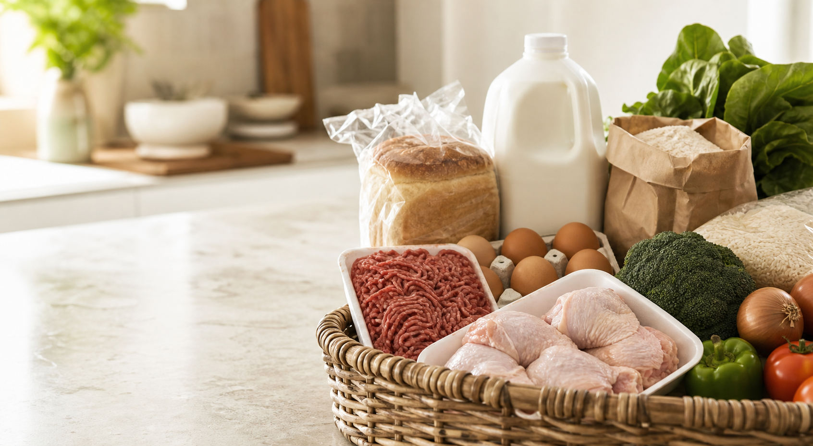

Build a list
Add the groceries you need, with or without an exact pack size.
Grocery price comparison South Africa
Your grocery list, compared clearly.
Compare grocery prices at Pick n Pay, Checkers, Woolworths, SPAR and Makro. Search the products you need, compare pack sizes fairly, and choose the basket that works for you.

Checking current listings...Lowest listed price found · National results unless location is shared
Compare live prices →Add the groceries you need, with or without an exact pack size.
See close product matches and current listed prices side by side.
Choose the items and retailer links that make the most sense for your basket.
See the difference
RandBasket compares the products and quantities in your basket, then shows the known totals and missing items for each selected retailer.
See the six-step guideR26.67 difference before delivery fees, loyalty rules or checkout changes.
Focused from day one
RandBasket is being built around the products South Africans actually put in a weekly basket.
Early access
The RandBasket web app is live. Build a basket, compare published prices, and open retailer product links from any device.
Open the price checkerShop with clearer numbers
RandBasket brings comparable grocery products into one simple view. It uses pack sizes and unit prices—such as price per kilogram or litre—to help compare value across Pick n Pay, Checkers, Woolworths, SPAR and Makro.
Build a grocery basket, review the closest product matches, and see which retailer offers the strongest overall basket based on the prices available. RandBasket is independent and free to use.